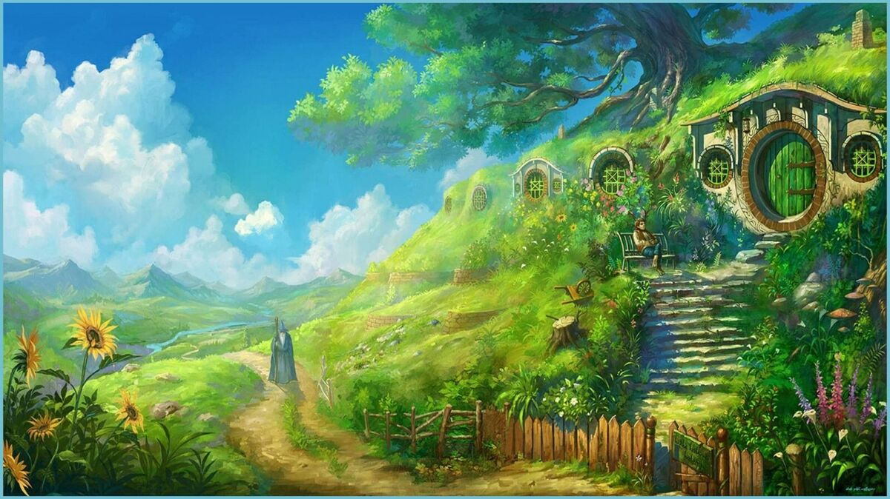

Хобитско селище
Шайр
Шайр е мирна и зелена земя, дом на хобитите. Разположена в северозападната част на Средната земя, Шайр е известна със своите кръгли врати, зелени поля и уютни колиби. Управлява се от графове, но реално няма централна власт.
Особености:
- Разделена на четири четвърти: Северна, Южна, Източна и Западна
- Главен град: Мичел Делвинг
- Известни семейства: Бегинси, Туки, Брендибък
- Основана през 1601 г. от Третата епоха
"Няма по-спокойно място от Шайр за един прост хобит."